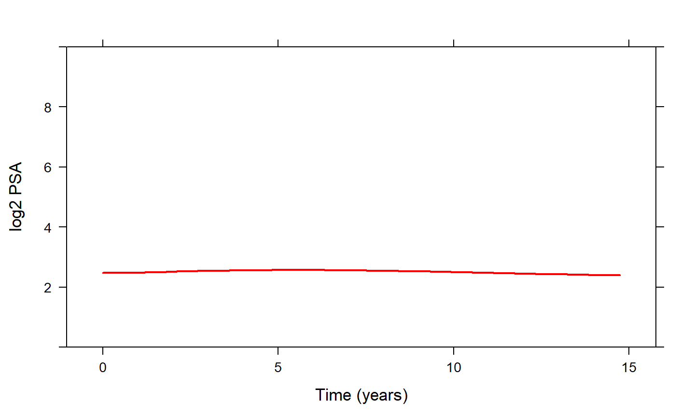
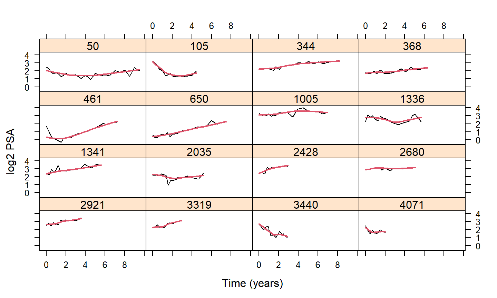

NWA matchmaking symposium
November 6, 2020
Background & Motivation
Personalized/Precision Medicine
What is dynamic prediction modeling?
At which stages of mental health care will be dynamic prediction modeling useful?
What is needed to build a successful dynamic prediction model?
An Example: Prostate Cancer
- To avoid over-treatment, men with low grade prostate cancer are advised active surveillance
- Treatment is advised when cancer progression is observed
- typically via biopsies when Gleason Score \(\geq 7\)
Frequency of Biopsies
Current Standards
- Annual Biopsies
- focus on minimizing delay
- many unnecessary biopsies for patients who progress slow
- Less Frequent Biopsies
- every 3 years
- still unnecessary biopsies for patients who progress slow
Current Standards (cont’d)
-
unnecessary biopsies \(\Rightarrow\) Low compliance
- effectiveness of AS is compromised
Considerable room to improve biopsy scheduling
A New Approach: Personalized Scheduling
Personalized Dynamic Modeling
- Scheduling based on individualized risk predictions
- Progression rate is not only different between patients but also dynamically changes over time for the same patient
Personalized Dynamic Modeling (cont’d)

Personalized Dynamic Modeling (cont’d)

Dynamic Models

Personalizing the Biopsy Schedules
- Online web app available at https://emcbiostatistics.shinyapps.io/prias_biopsy_recommender/
Thank you for your attention!
These slides are available at: